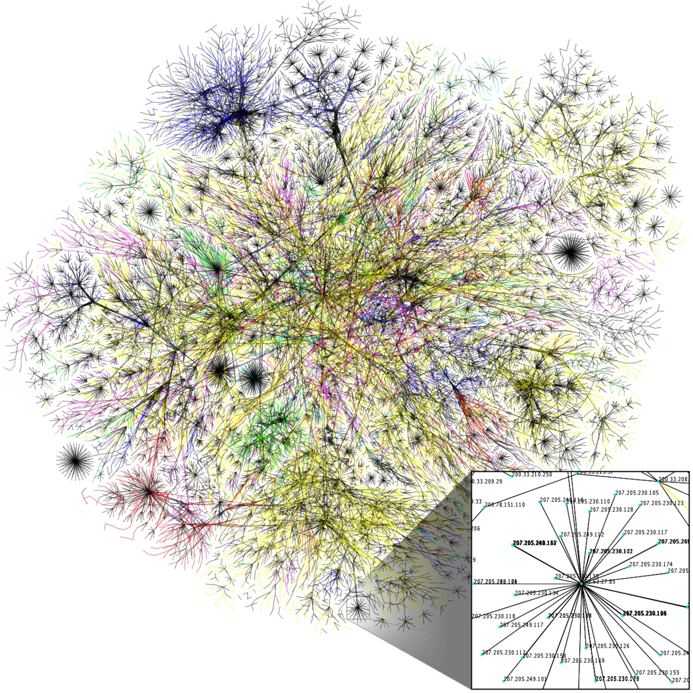

This module equips you with the essential skills and techniques need in the field of designing, creation and maintainance of computer networks. It takes you through the various technical terminologies present in the networking field and enlightens on the various technologies involved in the transfer and securing of data.
In information technology, a computer network, also called a data network, is a series of points, or nodes, interconnected by communication paths for the purpose of transmitting, receiving and exchanging data, voice and video traffic.Network devices including switches and routers use a variety of protocols and algorithms to exchange information and to transport data to its intended endpoint. Every endpoint (sometimes called a host) in a network has a unique identifier, often an IP address or a Media Access Control address, that is used to indicate the source or destination of the transmission. Endpoints can include servers, personal computers, phones and many types of network hardware. - techtarget.com
The size of a network is determined by:
Herein is an image of the Internet. The largest connection of nodes(computers, cars, mobile phones e.t.c).
There are many different ways to connect users and organizations to the Internet.Home users, teleworkers (remote workers), and small offices typically require a connection to an Internet Service Provider (ISP) to access the Internet. Connection options vary greatly between ISP and geographical location. However, popular choices include: broadband cable, broadband digital subscriber line (DSL), wireless WANs, and mobile services.
Organizations typically require access to other corporate sites and the Internet. Fast connections are required to support business services including IP phones, video conferencing, and data center storage.Business-class interconnections are usually provided by service providers (SP). Popular business-class services include: business DSL, leased lines, and Metro Ethernet.
Take QuizNetwork protocols are formal standards and policies comprised of rules, procedures and formats that define communication between two or more devices over a network. Network protocols govern the end-to-end processes of timely, secure and managed data or network communication. The video below explains in detail what exactly a network protocol entails.
Modern protocols for computer networking all generally use packet switching techniques to send and receive messages in the form of packets - messages subdivided into pieces that are collected and re-assembled at their destination.Hundreds of different computer network protocols have been developed each designed for specific purposes and environments.
The Internet Protocol family contains a set of related (and among the most widely used network protocols. Beside Internet Protocol (IP) itself, higher-level protocols like TCP, UDP, HTTP, and FTP all integrate with IP to provide additional capabilities. Similarly, lower-level Internet Protocols like ARP and ICMP also co-exist with IP. In general, higher level protocols in the IP family interact more closely with applications like Web browsers while lower-level protocols interact with network adapters and other computer hardware.
Thanks to Wi-Fi, Bluetooth and LTE, wireless networks have become commonplace. Network protocols designed for use on wireless networks must support roaming mobile devices and deal with issues such as variable data rates and network security.
Routing protocols are special-purpose protocols designed specifically for use by network routers on the Internet. A routing protocol can identify other routers, manage the pathways (called routes) between sources and destinations of network messages, and make dynamic routing decisions. Common routing protocols include EIGRP, OSPF and BGP. - source lifewire.com
Take QuizTo support our communication, the OSI model divides the functions of a data network into layers. Each layer works with the layers above and below to transmit data. Two layers of the OSI model are so closely tied, that according to the TCP/IP model they are in essence one layer. Those two layers are the data link layer and the physical layer.
On the sending device, it is the role of the data link layer to prepare data for transmission and control how that data accesses the physical media. However, the physical layer controls how the data is transmitted onto the physical media by encoding the binary digits that represent data into signals.
On the receiving end, the physical layer receives signals across the connecting media. After decoding the signal back into data, the physical layer passes the frame to the data link layer for acceptance and processing.
This chapter begins with the general functions of the physical layer and the standards and protocols that manage the transmission of data across local media. It also introduces the functions of the data link layer and the protocols associated with it.
Whether connecting to a local printer in the home or a web site in another country, before any network communications can occur, a physical connection to a local network must be established. A physical connection can be a wired connection using a cable or a wireless connection using radio waves.
The type of physical connection used is dependent upon the setup of the network. For example, in many corporate offices employees have desktop or laptop computers that are physically connected, via cable, to a shared switch. This type of setup is a wired network. Data is transmitted through a physical cable.
In addition to wired connections, some businesses may also offer wireless connections for laptops, tablets, and smartphones. With wireless devices, data is transmitted using radio waves. The use of wireless connectivity is becoming more common as individuals, and businesses alike, discover the advantages of offering this type of service. To offer wireless capability, devices on a wireless network must be connected to a wireless access point (AP).
Switch devices and wireless access points are often two separate dedicated devices within a network implementation. However, there are also devices that offer both wired and wireless connectivity. In many homes, for example, individuals are implementing home integrated service routers (ISRs), as shown in Figure 1. ISRs offer a switching component with multiple ports, allowing multiple devices to be connected to the local area network (LAN) using cables, as shown in Figure 2. Additionally, many ISRs also include an AP, which allows wireless devices to connect as well.Cisco Networking Academy (CCNA)
Take Quiz